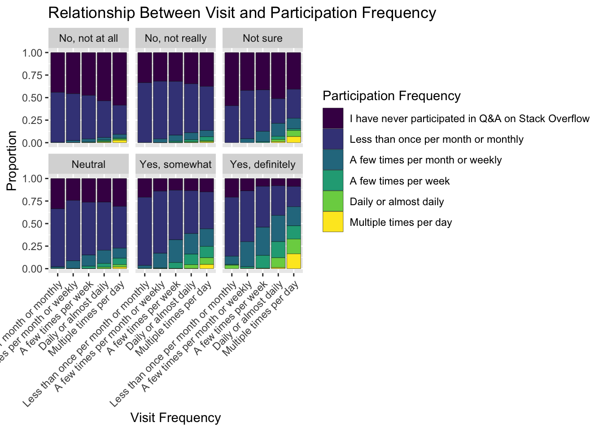
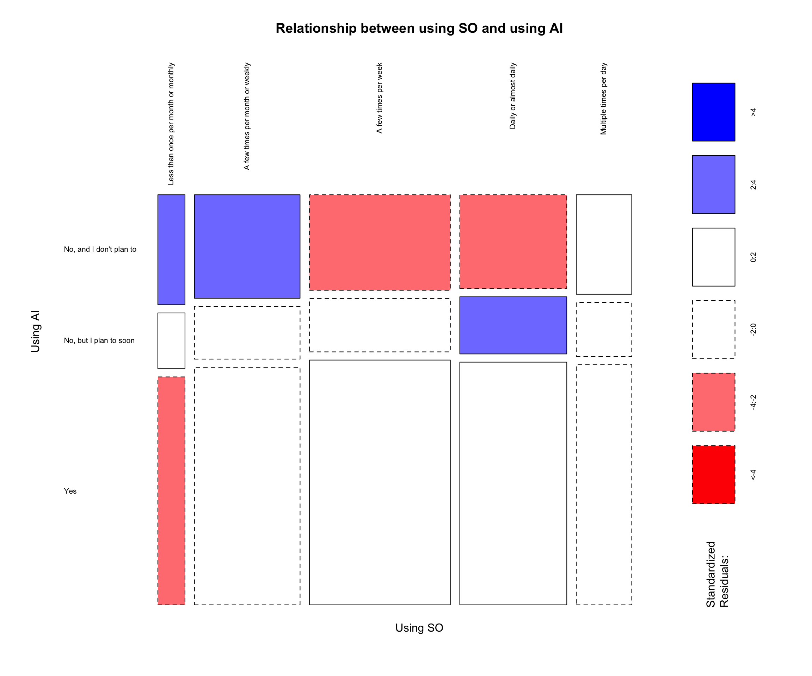
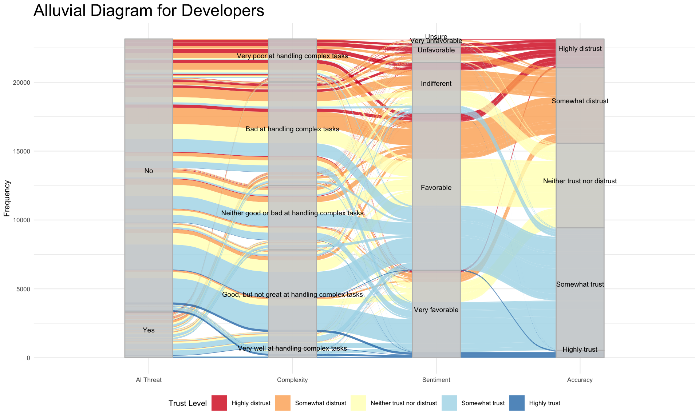

`summarise()` has grouped output by 'Industry'. You can override using the
`.groups` argument.
Code
ggplot(distribution, aes(x =reorder(Industry, -Percent), y = Percent, fill = AIThreat)) +geom_bar(stat ="identity") +labs(title ="Distribution of AI Threat by Industry",x ="Industry",y ="Percentage",fill ="AI Threat" ) +theme_minimal() +theme(axis.text.x =element_text(angle =45, hjust =1) )
Code
# | fig-width: 15SOVisitFreq_order <-c('Less than once per month or monthly', 'A few times per month or weekly', 'A few times per week', 'Daily or almost daily', 'Multiple times per day')selected$SOVisitFreq <-factor(selected$SOVisitFreq, levels = SOVisitFreq_order, ordered =TRUE)SOPartFreq_order <-c('I have never participated in Q&A on Stack Overflow', 'Less than once per month or monthly', 'A few times per month or weekly', 'A few times per week', 'Daily or almost daily', 'Multiple times per day')selected$SOPartFreq <-factor(selected$SOPartFreq, levels = SOPartFreq_order, ordered =TRUE)filtered <- selected |>filter(!is.na(SOVisitFreq) &!is.na(SOPartFreq))ggplot(filtered, aes(x = SOVisitFreq, y = SOPartFreq)) +geom_jitter(alpha=0.04) +labs(x ="Stack Overflow Visits",y ="Stack Overflow Participation" ) +theme_minimal() +theme(axis.text.x =element_text(angle =45, hjust =1) )
Code
library(forcats)# Reorder DevType and place NA at the bottomavg_years_code_pro <- selected %>%group_by(DevType) %>%summarize(avg_years_code_pro =mean(as.numeric(YearsCodePro), na.rm =TRUE))
Warning: There were 35 warnings in `summarize()`.
The first warning was:
ℹ In argument: `avg_years_code_pro = mean(as.numeric(YearsCodePro), na.rm =
TRUE)`.
ℹ In group 1: `DevType = "Academic researcher"`.
Caused by warning in `mean()`:
! NAs introduced by coercion
ℹ Run `dplyr::last_dplyr_warnings()` to see the 34 remaining warnings.
Warning: There was 1 warning in `mutate()`.
ℹ In argument: `DevType = fct_explicit_na(DevType, na_level = "NA")`.
Caused by warning:
! `fct_explicit_na()` was deprecated in forcats 1.0.0.
ℹ Please use `fct_na_value_to_level()` instead.
Code
# Create the Cleveland dot plotggplot(avg_years_code_pro, aes(x = avg_years_code_pro, y =reorder(DevType, avg_years_code_pro))) +geom_point(color ="skyblue", size =2) +# Use points instead of barslabs(x ="Average Years of Professional Coding", y ="Developer Type", title ="Average Years of Professional Coding by Developer Type") +theme_minimal() +# Cleaner themetheme(axis.text.y =element_text(size =10), # Adjust y-axis text sizeaxis.title =element_text(size =12)) # Adjust axis title size
This graph represents and confirms what is already suspected, those with most years of professional coding experience are at higher positions like C-Suite, Managers, Product Managers whereas those with lower years of coding experience tend to be Students, Data Analysts, Designers etc. Higher Experience Roles: C-Suite Executives oversee company-wide, strategy, budgeting, and long-term planning, responsibilities often gained after years of technical and managerial experience. Product Managers need domain knowledge and business acumen, skills that are developed through years of cross-functional experience.
Lower Experience Roles: These roles often serve as entry-level positions or focus on specific aspects of tech projects without requiring extensive coding experience. Students are just beginning their journey and likely still developing coding expertise through education and internships. Data Analysts often rely more on tools like Excel, SQL, and Tableau rather than programming-heavy workflows, making these roles accessible to those with foundational coding knowledge. Designers focus on user interfaces and experiences, requiring creativity and knowledge of design tools more than coding proficiency.
Code
SOVisitFreq_order <-c('Less than once per month or monthly', 'A few times per month or weekly', 'A few times per week', 'Daily or almost daily', 'Multiple times per day')selected$SOVisitFreq <-factor(selected$SOVisitFreq, levels = SOVisitFreq_order, ordered =TRUE)filtered_data <- selected |>filter(!is.na(AISelect) &!is.na(SOVisitFreq))contingency_table <-table(filtered_data$SOVisitFreq, filtered_data$AISelect)mosaicplot(contingency_table, color=TRUE, shade=TRUE, las =1, main='Relationship between using SO and using AI')
Code
require(HH)
Loading required package: HH
Loading required package: lattice
Loading required package: grid
Loading required package: latticeExtra
Attaching package: 'latticeExtra'
The following object is masked from 'package:ggplot2':
layer
Loading required package: multcomp
Loading required package: mvtnorm
Loading required package: survival
Loading required package: TH.data
Loading required package: MASS
Attaching package: 'MASS'
The following object is masked _by_ '.GlobalEnv':
survey
The following object is masked from 'package:plotly':
select
The following object is masked from 'package:dplyr':
select
Attaching package: 'TH.data'
The following object is masked from 'package:MASS':
geyser
Loading required package: gridExtra
Attaching package: 'gridExtra'
The following object is masked from 'package:dplyr':
combine
Attaching package: 'HH'
The following object is masked from 'package:lubridate':
interval
The following object is masked from 'package:purrr':
transpose
The following object is masked from 'package:base':
is.R
library(plotly)AI_survey <-read.csv('data/parsed_AItools.csv')AI <-subset(AI_survey, select =-X)data_long <- AI %>%pivot_longer(cols =-index, names_to ="category", values_to ="value")ggplot(data_long, aes(x = index, y = category, fill = value)) +geom_tile() +scale_fill_viridis(option ="C") +# Color scalelabs(x ="Development Workflow", y ="AI integration interest", title ="Interest in Integrating AI into Development Activities") +scale_y_discrete(labels =c("Currently.Using"="Currently using", "Interested.in.Using"="Interested in using", "Not.interested.in.Using"="Not interested in using")) +# Relabel y-axistheme(axis.text.x =element_text(angle =45, hjust =1))
Code
ggplot(selected, aes(x = AISelect, y = Age)) +geom_jitter(aes(color = AISelect), width =0.1, height =0.1, alpha =0.05) +theme_minimal() +labs(title ="Jitter Plot of AISelect vs Age",x ="AISelect",y ="Age")

Code
ggplot(selected, aes(x = DevType, fill = RemoteWork)) +geom_bar(position ="fill") +labs(x ="Developer Type", y ="Proportion of Remote Work", title ="Proportion of Remote Work by Developer Type") +theme(axis.text.x =element_text(angle =45, hjust =1))
Roles such as Data Scientist or Machine Learning Specialist, Cloud Infrastructure Engineer, and Developer - Backend have significant proportions of employees working fully remote, indicating these roles are well-suited for remote work environments. Hybrid work is the most common mode for many roles, such as Product Manager, Full-stack Developer, and Site Reliability Engineer, indicating a balanced approach where both remote and in-person presence are valued. In-person work is seen more in roles like Hardware Engineer, Engineering Manager, and System Administrator, which may require physical presence due to the nature of their responsibilities, such as managing physical systems or hardware.
Code
ggplot(selected, aes(x =as.factor(AISelect), y =as.numeric(JobSat))) +geom_jitter(aes(), alpha =0.1, width =0.2) +# Add jitter for better visibilitylabs(x ="AI Tool Selection", y ="Job Satisfaction",title ="AI Tool Usage vs Job Satisfaction by Stack overflow visit freq") +facet_wrap(~ SOVisitFreq) +# Facet by RemoteWork statustheme(axis.text.x =element_text(angle =45, hjust =1))
Warning: Removed 36311 rows containing missing values or values outside the scale range
(`geom_point()`).

Individuals who selected Yes for AI tool usage generally show high job satisfaction across all visit frequencies. Those planning to use AI tools soon seem to have slightly lower job satisfaction compared to current users but higher satisfaction than those not using AI tools. Job satisfaction appears distributed similarly across different Stack Overflow visit frequencies. Frequent visitors exhibit a larger spread of job satisfaction, potentially indicating diverse user experiences. Denser areas in each plot indicate where most responses are concentrated. “Yes” under AI Tool Selection has a higher density at the top of the y-axis, suggesting a positive association between AI tool usage and job satisfaction. This analysis suggests that using AI tools is associated with higher job satisfaction, regardless of Stack Overflow visit frequency.
Code
ggplot(selected, aes(x = SOPartFreq, fill = RemoteWork)) +geom_bar(position ="dodge", color ="black") +labs(x ="Participation Frequency", y ="Count", fill ="Remote Work Setup",title ="Participation Frequency vs. Remote Work Setup") +theme(axis.text.x =element_text(angle =45, hjust =1))
The Hybrid (some remote, some in-person) setup is the most frequent across all participation categories. In-person workers generally participate less frequently, with lower counts in all categories except for “Less than once per month or monthly.” The Remote group has a significant number of participants, particularly in the “Multiple times per day” and “Daily or almost daily” categories, but still lower than the Hybrid group. “A few times per week” and “Less than once per month or monthly” show low levels of participation, especially in the In-person group, indicating less frequent participation in Stack Overflow for those working primarily in-person. The “I have never participated in Q&A on Stack Overflow” category shows a notable number of In-person workers, suggesting lower engagement from those not working remotely.
Code
selected_vf_pf <- selected %>%filter(!is.na(SOVisitFreq) &!is.na(SOPartFreq))# Create the plotggplot(selected_vf_pf, aes(x = SOVisitFreq, fill = SOPartFreq)) +geom_bar(position ="fill", color ="black") +labs(x ="Visit Frequency", y ="Proportion", fill ="Participation Frequency",title ="Relationship Between Visit and Participation Frequency") +theme(axis.text.x =element_text(angle =45, hjust =1))
For those visiting “Once per month or monthly,” a significant portion has never participated, or participates less than once per month. This suggests that infrequent visitors are less likely to engage actively. As visit frequency increases to “A few times per month or weekly,” there is a noticeable increase in participation, particularly in the “A few times per week” category. This indicates that more frequent visits are associated with higher engagement. For those visiting “Daily or almost daily,” participation is more evenly distributed across different frequencies, with a notable increase in daily participation. The category “Multiple times per day” shows a high level of active participation, with many users participating multiple times daily. The proportion of users who have never participated decreases as visit frequency increases. Users visiting more frequently tend to participate more actively. This is evident from the increasing proportions in categories like “Daily or almost daily” and “Multiple times per day” as visit frequency increases.
Code
library(ggplot2)library(dplyr)# Prepare data: Count frequency of combinations of AIThreat and AISentai_threat_sentiment <- selected %>%filter(!is.na(AIThreat) &!is.na(AISent)) %>%count(AIThreat, AISent)# Create a stacked bar plotggplot(ai_threat_sentiment, aes(x = AISent, y = n, fill = AIThreat)) +geom_bar(stat ="identity") +labs(title ="AI Threat Perception vs AI Sentiment",x ="AI Sentiment",y ="Count",fill ="AI Threat") +theme_minimal() +theme(axis.text.x =element_text(angle =45, hjust =1))
The following object is masked from 'package:viridis':
unemp
The following object is masked from 'package:purrr':
map
Code
# Assume 'selected' is the dataset you're working with# Step 1: Summarize the average Job Satisfaction by countryjob_sat_data <- selected %>%filter(!is.na(JobSat)) %>%# Remove rows with missing job satisfaction datagroup_by(Country) %>%# Group by countrysummarise(AvgJobSat =mean(as.numeric(as.character(JobSat)), na.rm =TRUE)) # Calculate average job satisfaction# Step 2: Get map datamap_data <-map_data("world")# Step 3: Merge the map data with the summarized job satisfaction datamerged_data <-left_join(map_data, job_sat_data, by =c("region"="Country"))# Step 4: Plot the choropleth mapggplot(merged_data, aes(x = long, y = lat, group = group, fill = AvgJobSat)) +geom_polygon(color ="black", size =0.1) +# Draw polygons with black bordersscale_fill_viridis(option ="magma", direction =-1, name ="Avg Job Sat") +# Use 'viridis' color scale for better visibilitytheme_void() +# Remove axis and grid lines for a cleaner maplabs(title ="Average Job Satisfaction by Country") # Add title
Warning: Using `size` aesthetic for lines was deprecated in ggplot2 3.4.0.
ℹ Please use `linewidth` instead.
Code
# Load necessary librarieslibrary(ggplot2)library(dplyr)library(tidyr)library(viridis)library(maps)# Step 1: Summarize the proportion of people who think AI is a threat by countryai_threat_data <- selected %>%filter(!is.na(AIThreat)) %>%# Remove rows with missing datagroup_by(Country) %>%# Group by countrysummarise(ThreatCount =sum(AIThreat =="Yes", na.rm =TRUE), # Count how many think AI is a threatTotalCount =n(), # Count the total number of responsesProportionThreat = ThreatCount / TotalCount *100# Calculate the proportion )# Step 2: Get map datamap_data <-map_data("world")# Step 3: Merge the map data with the summarized AI threat datamerged_data <-left_join(map_data, ai_threat_data, by =c("region"="Country"))# Step 4: Plot the choropleth mapggplot(merged_data, aes(x = long, y = lat, group = group, fill = ProportionThreat)) +geom_polygon(color ="black", size =0.1) +# Draw polygons with black bordersscale_fill_viridis(option ="magma", direction =-1, name ="AI Threat Proportion (%)") +# Use 'viridis' color scaletheme_void() +# Remove axis and grid lines for a cleaner maplabs(title ="Proportion of People Who Think AI is a Threat by Country") # Add title

Code
ai_next <-read.csv('data/ai_next.csv')likert(index ~ .,data=ai_next, ylab=NULL, ReferenceZero=3,as.percent=TRUE,main =list("Future AI integration into workflow",x=unit(.55, "npc")),strip=FALSE,par.strip.text=list(cex=.7))
Code
library(ggplot2)# Define the correct order of education levelsselected$EdLevel <-factor(selected$EdLevel, levels =c("Primary/elementary school", "Secondary school (e.g. American high school, German Realschule or Gymnasium, etc.)","Some college/university study without earning a degree","Associate degree (A.A., A.S., etc.)","Bachelor’s degree (B.A., B.S., B.Eng., etc.)","Master’s degree (M.A., M.S., M.Eng., MBA, etc.)","Professional degree (JD, MD, Ph.D, Ed.D, etc.)","Something else"))ggplot(selected, aes(x = EdLevel)) +geom_bar(fill ="skyblue", color ="black") +labs(title ="Distribution of Highest Level of Formal Education",x ="Education Level",y ="Count" ) +theme_minimal() +theme(axis.text.x =element_text(angle =45, hjust =1))
From this graph it can be seen that the most common highest qualification for people is a Bachelor’s degree, followed by a Master’s degree. Over 40,000 individuals have achieved higher education degrees (Bachelor’s, Master’s, and Professional degrees). This suggests a strong focus on advanced education within the community. Approximately 16,000+ individuals fall into categories such as pre-primary, secondary, some college without a degree, associate degrees, and “something else.” This indicates that fewer people stop their formal education at these levels. The substantial number of Master’s and Professional degrees signifies a trend toward pursuing advanced education.
Code
# Install and load treemap packagelibrary(treemap)# Create a treemap for education levelsindustry_counts_df <-as.data.frame(table(selected$Industry))# Create the treemap with labels and legendtreemap(industry_counts_df,index ="Var1", # Category variablevSize ="Freq", # Size based on frequencyvColor ="Freq", # Color based on frequencypalette ="Blues", # Customize the color palettedraw =TRUE,title ="Distribution of Industries of Respondents",fontsize.title =16, # Adjust title font sizefontsize.labels =12, # Adjust labels font sizefontsize.legend =10, # Adjust legend font sizelegend =TRUE, # Show legendborder.col ="white"# White border around the tiles for better visibility)
Software Development is the largest sector, occupying a significant portion of the distribution. This could reflect the high engagement of software developers in surveys like these. Fintech and Internet, Telecomm or Information Services are also prominent, reflecting the growing importance of digital financial services and communication technologies. Healthcare and Retail and Consumer Services are moderately sized. Sectors like Banking/Financial Services, Manufacturing, and Government have smaller representations, suggesting either niche markets or less emphasis compared to larger sectors. Media & Advertising Services, Higher Education, and Transportation, or Supply Chain are similarly sized. The inclusion of non-tech industries like Healthcare, Government, and Retail shows that technology professionals are present across diverse fields. The dominance of tech industries highlights the survey’s appeal to respondents working in these domains.
Code
ggplot(selected, aes(x = Age)) +geom_bar(fill='lightblue') +facet_wrap(~ MainBranch) +theme_minimal() +labs(title ="Distribution of Age by Main Branch",x ="Age",y ="Count")+theme(axis.text.x =element_text(angle =45, hjust =1))
The majority of respondents are professional developers, particularly in the 18-24 and 25-34 age groups. This indicates a strong presence of young professionals in the tech industry. Those who code primarily as a hobby or are learning to code are significantly fewer compared to professional developers. However, they are present across all age groups, with a slight concentration in younger demographics. Individuals who used to be developers but no longer are form a very small portion of the sample, suggesting that career transitions out of development might be less common or that they move into roles still related to technology. People who code as part of their work or studies but not as their primary role are spread across various age groups, with notable numbers in the 25-34 and 35-44 age ranges. This reflects the interdisciplinary nature of coding skills in various professions. The 18-24 and 25-34 age groups dominate across most categories, highlighting these as key ages for both entering and establishing a career in coding.